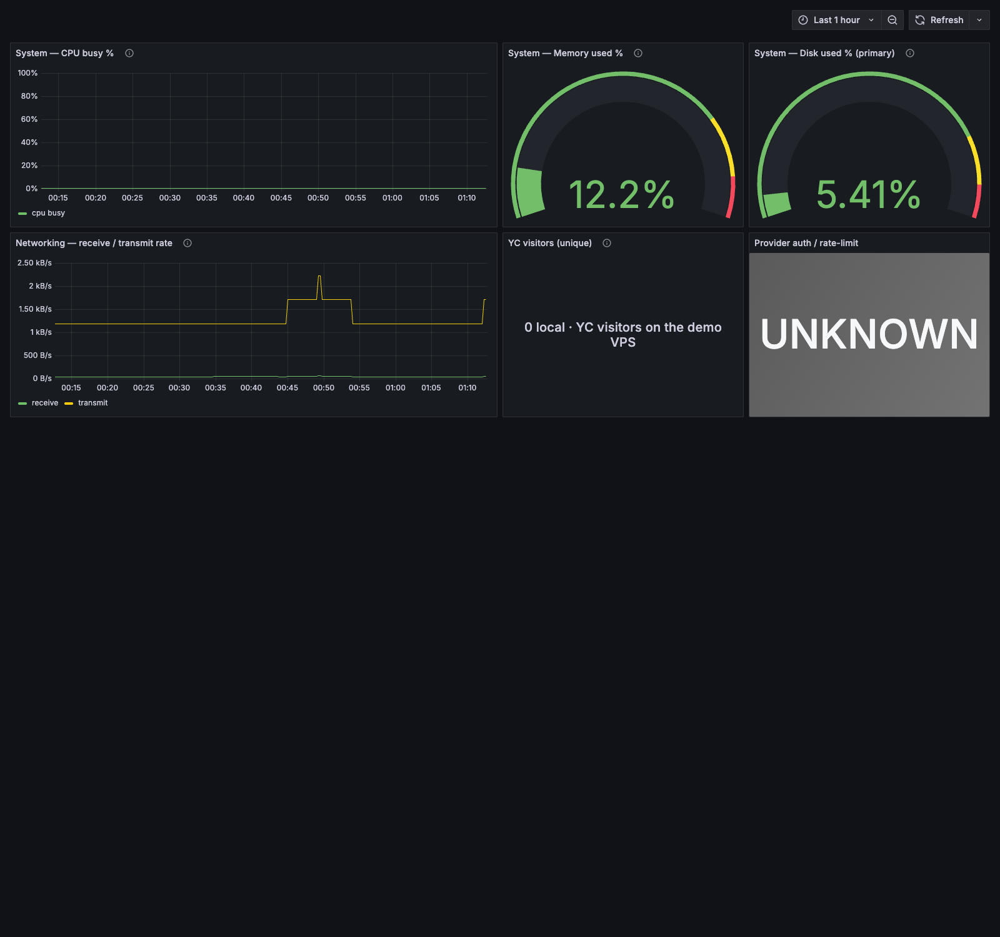

OpenRig · System
Observability
One clean folder that a rig boots into a working, agent-managed observability stack — a bounded Grafana + Prometheus + node-exporter stack an observer seat deploys, watches, and explains in plain English, honest about every unknown and failure.
What the dashboard shows
- System — CPU busy, memory used, disk used, from node-exporter reading the real guest /proc, /sys, and rootfs (read-only, unprivileged).
- Networking — receive / transmit rates, from node-exporter.
- Visitor activity — read-only from the box's access-visitors log; never modified.
- Provider auth / rate-limit — read-only from the provider watcher's state; reads UNKNOWN when the source is unavailable, never a fabricated zero.
The three verbs
node obs.mjs deploy boot only this bounded stack (disposable guest only) node obs.mjs watch report current stack + source + metric health node obs.mjs explain plain-English "how is the box doing right now?"
Honest data contract
The adapter transforms the read-only JSONL sources into an owned Prometheus textfile (box_visitor_*, box_provider_*) and never modifies the sources. A missing, malformed, or unavailable source is reported as unavailable (box_*_source_available 0) — never a fabricated healthy zero — and a real provider failure always outranks an incidental unknown.
